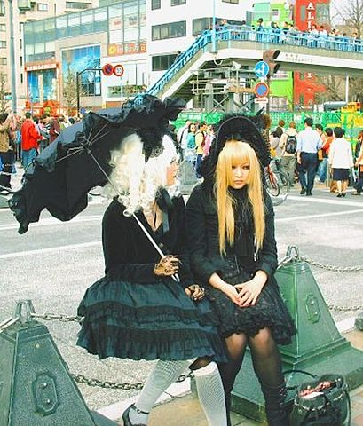

Absolute path: a fashion blog
Relative path: about lolita
Eamil path: f.czwakiel@hotmail.com
Image link: 
One morning state police
escort us to your grave
the next my flight is canceled.
Maintenance issues breaking
out all over. You would speak
of a "grand theory," something
tying all this together, but
you had none yourself, none
that reached me then or now